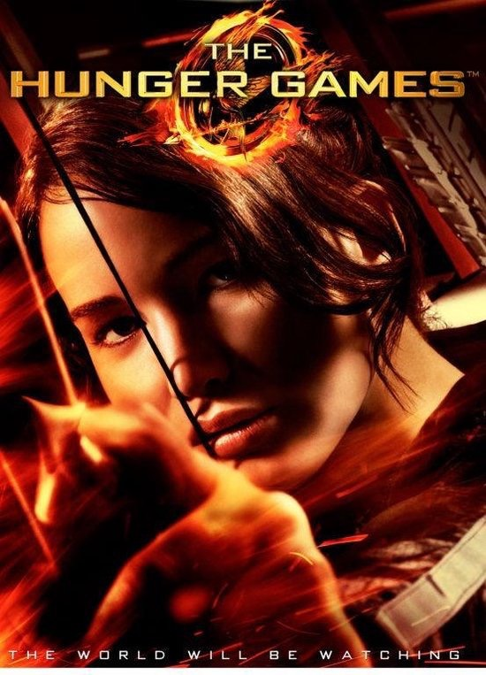

THE HUNGER GAMES
Een spannende film over een meisje dat wordt gekozen om mee te doen aan de Hunger Games, een gevaarlijke strijd waarin jongeren uit verschillende districten tegen elkaar moeten vechten om te overleven.
Mijn mening: Ik vind deze film erg spannend en goed gemaakt. Het verhaal, de spanning en de personages maken hem extra leuk om te kijken.